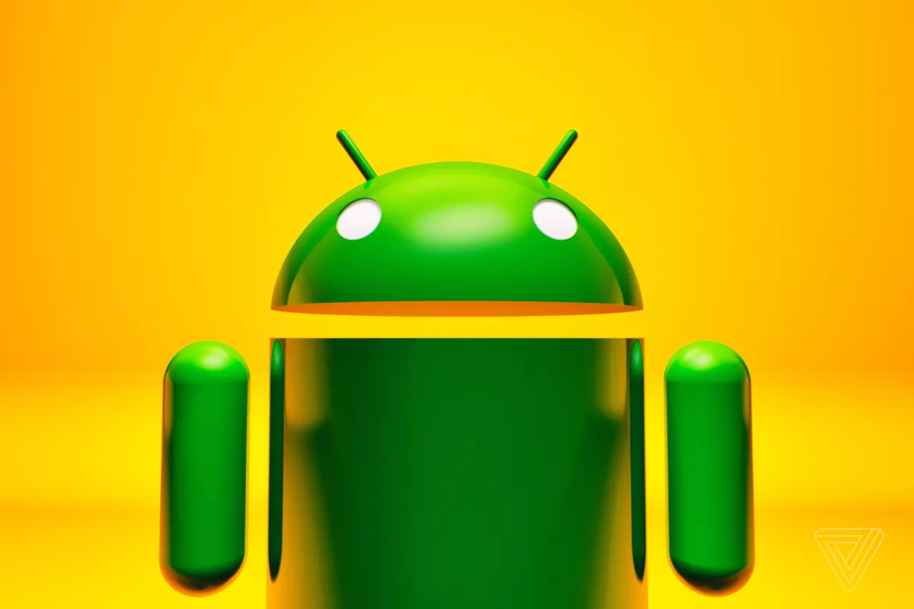
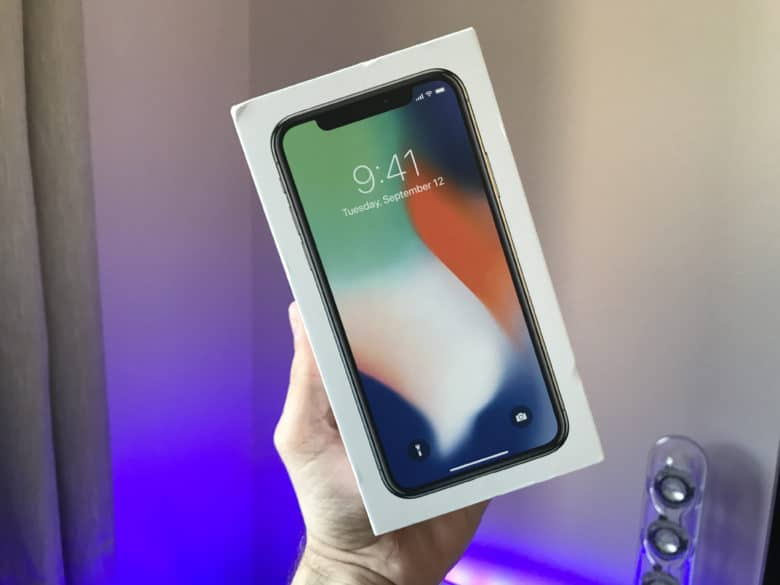
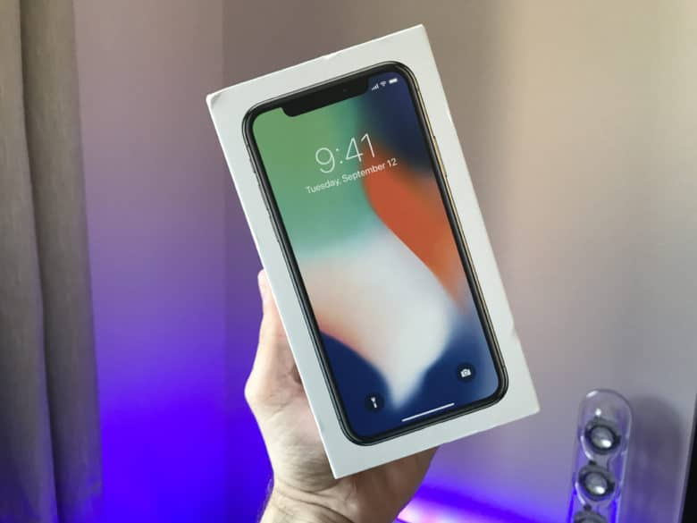
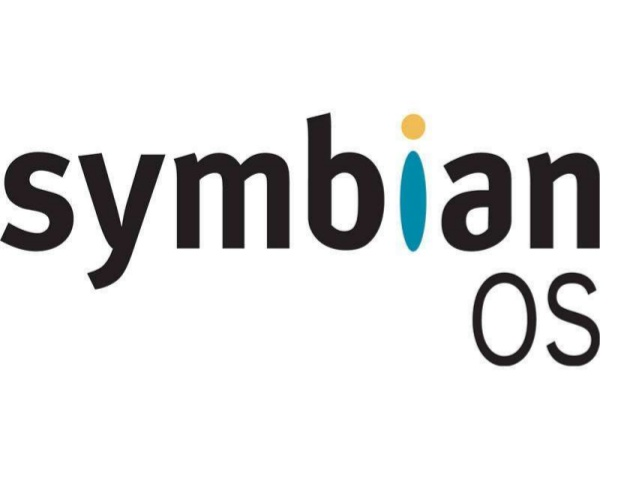
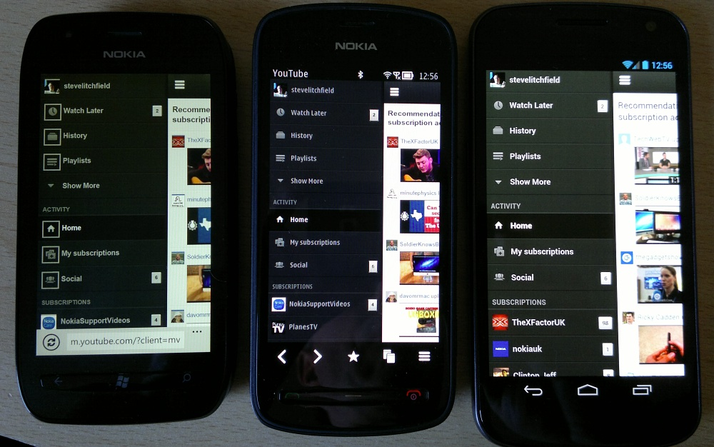

PHONES
ANDROID
 Android is a mobile operating system developed by Google. It is based on a modified version of the Linux kernel and other open source software, and is designed primarily for touchscreen mobile devices such as smartphones and tablets. In addition, Google has further developed Android TV for televisions, Android Auto for cars, and Wear OS for wrist watches, each with a specialized user interface. Variants of Android are also used on game consoles, digital cameras, PCs and other electronics.
Initially developed by Android Inc., which Google bought in 2005, Android was unveiled in 2007, with the first commercial Android device launched in September 2008. The operating system has since gone through multiple major releases, with the current version being 9 "Pie", released in August 2018. Google released the first Android Q beta on all Pixel phones on March 13, 2019. The core Android source code is known as Android Open Source Project (AOSP), and is primarily licensed under the Apache License.
Android is also associated with a suite of proprietary software developed by Google, called Google Mobile Services[10] (GMS) that very frequently comes pre-installed in devices, which usually includes the Google Chrome web browser and Google Search and always includes core apps for services such as Gmail, as well as the application store and digital distribution platform Google Play, and associated development platform. These apps are licensed by manufacturers of Android devices certified under standards imposed by Google, but AOSP has been used as the basis of competing Android ecosystems, such as Amazon.com's Fire OS, which use their own equivalents to GMS.
Android has been the best-selling OS worldwide on smartphones since 2011 and on tablets since 2013. As of May 2017, it has over two billion monthly active users, the largest installed base of any operating system, and as of December 2018, the Google Play store features over 2.6 million apps.[11]
Android is a mobile operating system developed by Google. It is based on a modified version of the Linux kernel and other open source software, and is designed primarily for touchscreen mobile devices such as smartphones and tablets. In addition, Google has further developed Android TV for televisions, Android Auto for cars, and Wear OS for wrist watches, each with a specialized user interface. Variants of Android are also used on game consoles, digital cameras, PCs and other electronics.
Initially developed by Android Inc., which Google bought in 2005, Android was unveiled in 2007, with the first commercial Android device launched in September 2008. The operating system has since gone through multiple major releases, with the current version being 9 "Pie", released in August 2018. Google released the first Android Q beta on all Pixel phones on March 13, 2019. The core Android source code is known as Android Open Source Project (AOSP), and is primarily licensed under the Apache License.
Android is also associated with a suite of proprietary software developed by Google, called Google Mobile Services[10] (GMS) that very frequently comes pre-installed in devices, which usually includes the Google Chrome web browser and Google Search and always includes core apps for services such as Gmail, as well as the application store and digital distribution platform Google Play, and associated development platform. These apps are licensed by manufacturers of Android devices certified under standards imposed by Google, but AOSP has been used as the basis of competing Android ecosystems, such as Amazon.com's Fire OS, which use their own equivalents to GMS.
Android has been the best-selling OS worldwide on smartphones since 2011 and on tablets since 2013. As of May 2017, it has over two billion monthly active users, the largest installed base of any operating system, and as of December 2018, the Google Play store features over 2.6 million apps.[11]
IOS
 
iOS (formerly iPhone OS) is a mobile operating system created and developed by Apple Inc. exclusively for its hardware. It is the operating system that presently powers many of the company's mobile devices, including the iPhone, iPad, and iPod Touch. It is the second most popular mobile operating system globally after Android.
Originally unveiled in 2007 for the iPhone, iOS has been extended to support other Apple devices such as the iPod Touch (September 2007) and the iPad (January 2010). As of March 2018, Apple's App Store contains more than 2.1 million iOS applications, 1 million of which are native for iPads.[9] These mobile apps have collectively been downloaded more than 130 billion times.
The iOS user interface is based upon direct manipulation, using multi-touch gestures. Interface control elements consist of sliders, switches, and buttons. Interaction with the OS includes gestures such as swipe, tap, pinch, and reverse pinch, all of which have specific definitions within the context of the iOS operating system and its multi-touch interface. Internal accelerometers are used by some applications to respond to shaking the device (one common result is the undo command) or rotating it in three dimensions (one common result is switching between portrait and landscape mode). Apple has been significantly praised for incorporating thorough accessibility functions into iOS, enabling users with vision and hearing disabilities to properly use its products.
Major versions of iOS are released annually. The current version, iOS 12, was released on September 17, 2018. It is available for all iOS devices with 64-bit processors; the iPhone 5S and later iPhone models, the iPad (2017), the iPad Air and later iPad Air models, all iPad Pro models, the iPad Mini 2 and later iPad Mini models, and the sixth-generation iPod Touch. On all recent iOS devices, iOS regularly checks on the availability of an update, and if one is available, will prompt the user to permit its automatic installation.

iOS (formerly iPhone OS) is a mobile operating system created and developed by Apple Inc. exclusively for its hardware. It is the operating system that presently powers many of the company's mobile devices, including the iPhone, iPad, and iPod Touch. It is the second most popular mobile operating system globally after Android.
Originally unveiled in 2007 for the iPhone, iOS has been extended to support other Apple devices such as the iPod Touch (September 2007) and the iPad (January 2010). As of March 2018, Apple's App Store contains more than 2.1 million iOS applications, 1 million of which are native for iPads.[9] These mobile apps have collectively been downloaded more than 130 billion times.
The iOS user interface is based upon direct manipulation, using multi-touch gestures. Interface control elements consist of sliders, switches, and buttons. Interaction with the OS includes gestures such as swipe, tap, pinch, and reverse pinch, all of which have specific definitions within the context of the iOS operating system and its multi-touch interface. Internal accelerometers are used by some applications to respond to shaking the device (one common result is the undo command) or rotating it in three dimensions (one common result is switching between portrait and landscape mode). Apple has been significantly praised for incorporating thorough accessibility functions into iOS, enabling users with vision and hearing disabilities to properly use its products.
Major versions of iOS are released annually. The current version, iOS 12, was released on September 17, 2018. It is available for all iOS devices with 64-bit processors; the iPhone 5S and later iPhone models, the iPad (2017), the iPad Air and later iPad Air models, all iPad Pro models, the iPad Mini 2 and later iPad Mini models, and the sixth-generation iPod Touch. On all recent iOS devices, iOS regularly checks on the availability of an update, and if one is available, will prompt the user to permit its automatic installation.
SYMBIANS

Symbian is a discontinued mobile operating system (OS) and computing platform designed for smartphones.[6] Symbian was originally developed as a closed-source OS for PDAs in 1998 by the Symbian Ltd. consortium.[7] Symbian OS was a descendant of Psion's EPOC, and ran exclusively on ARM processors, although an unreleased x86 port existed. Symbian was used by many major mobile phone brands, like Samsung, Motorola, Sony Ericsson, and above all by Nokia. It was also prevalent in Japan by brands including Fujitsu, Sharp and Mitsubishi. As a pioneer that established the smartphone industry, it was the most popular smartphone OS on a worldwide average until the end of 2010—at a time when smartphones were in limited use—when it was overtaken by Android, as Google and its partners achieved wide adoption. It was notably not as popular in North America.
The Symbian OS platform is formed of two components: one being the microkernel-based operating system with its associated libraries, and the other being the user interface (as middleware), which provides the graphical shell atop the OS.[8] The most prominent user interface was the S60 (formerly Series 60) platform built by Nokia, first released in 2002 and powering most Nokia Symbian devices. UIQ was a competing user interface mostly used by Motorola and Sony Ericsson that focused on pen-based devices, rather than a traditional keyboard interface from S60. Another interface was the MOAP(S) platform from carrier NTT DoCoMo in the Japanese market.[9][10] Applications of these different interfaces were not compatible with each other, despite each being built atop Symbian OS. Nokia became the largest shareholder of Symbian Ltd. in 2004 and purchased the entire company in 2008.[11] The non-profit Symbian Foundation was then created to make a royalty-free successor to Symbian OS – seeking to unify the platform, S60 became the Foundation's favoured interface and UIQ stopped development. The touchscreen-focused Symbian^1 (or S60 5th Edition) was created as a result in 2009. Symbian^2 (based on MOAP) was used by NTT DoCoMo, one of the members of the Foundation, for the Japanese market. Symbian^3 was released in 2010 as the successor to S60 5th Edition, by which time it became fully open source. Symbian^3 received the Anna and Belle updates in 2011.[12][13]
The Symbian Foundation disintegrated in late 2010 and Nokia took back control of the OS development.[14][15] In February 2011, Nokia, by now the only remaining company still supporting Symbian outside Japan, announced that it would use Microsoft's Windows Phone 7 as its primary smartphone platform, while Symbian would be gradually wound down.[16][17] Two months later, Nokia moved the OS to closed licensing, only collaborating with the Japanese OEMs[18] and later outsourced Symbian development to Accenture.[6][19] Although support was promised until 2016, including two major planned updates, by 2012 Nokia had mostly abandoned development and most Symbian developers had already left Accenture,[20] and in January 2014 Nokia stopped accepting new or changed Symbian software from developers.[21] The Nokia 808 PureView in 2012 was officially the last Symbian smartphone from Nokia.[22] NTT DoCoMo continued releasing OPP(S) (Operator Pack Symbian, successor of MOAP) devices in Japan, which still act as middleware on top of Symbian.[23] Phones running this include the F-07F [ja] from Fujitsu and SH-07F [ja] from Sharp in 2014.[24][25]